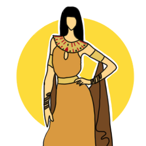
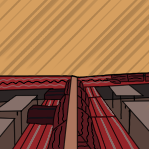
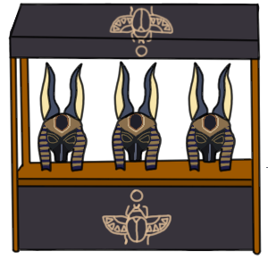

L'Égypte est un pont entre l'Afrique du Nord-Est et le Moyen-Orient. Son histoire remonte à l'époque des pharaons. Le sphinx et les pyramides de Gizeh bordent les berges de la fertile vallée du Nil, notamment. La ville de Louxor abrite le temple de Karnak et ses hiéroglyphes, ainsi que les tombeaux de la vallée des rois. Le Caire, la capitale, regorge de sites ottomans, comme la mosquée Mohammed Ali ou le musée égyptien et ses trésors d'antiquités.
Cuisine
La cuisine égyptienne comprend de nombreux mets culinaires. Elle est issue d'influences issues de la cuisine levantine, la cuisine arabe, la cuisine copte et la cuisine de l'Égypte antique. Le plat traditionnel de l’Egypte est le Foul moudammas, que vous pourrez évidemment goûter, et même apprendre à cuisiner lors de la première édition du Puy du monde, ainsi que plein d’autres spécialités Egyptienne.

Tenues traditionnelles
Les hommes portent un pagne, le chendjit, écharpe enroulée autour des reins et retenue à la taille par une ceinture, puis vers -1425/-1405, la tunique légère ou chemisette à manches ainsi que le jupon plissé. Pour les femmes, elles s’habillent d’une tunique transparente, elles mettent des bijoux d’or et de couleur bleu (lapis-lazuli).

Bar
Le vin égyptien est d'une qualité très variable mais souvent moyenne. Le rosé se laisse boire, s'il est servi bien glacé. La valeur la plus sûre reste la bière locale, la Stella, peu alcoolisée et très agréable. L’Égypte est plus connue pour les chichas.

Exposants
Dans la partie Égyptienne au Puy-en-Velay, vous pourrez découvrir les cartouches (hiéroglyphes Égyptien), les parfums, les papyrus ou encore les djellabas par exemple. Il y aura également une exposition d’œuvre d’arts d’artiste Égyptien.
Activité
Parmi les activités, vous pourrez vous maquiller dans le style de Cléopâtre, vous pourrez également vous essayer à la construction de pyramides et encore pleins d’autres choses à découvrir…